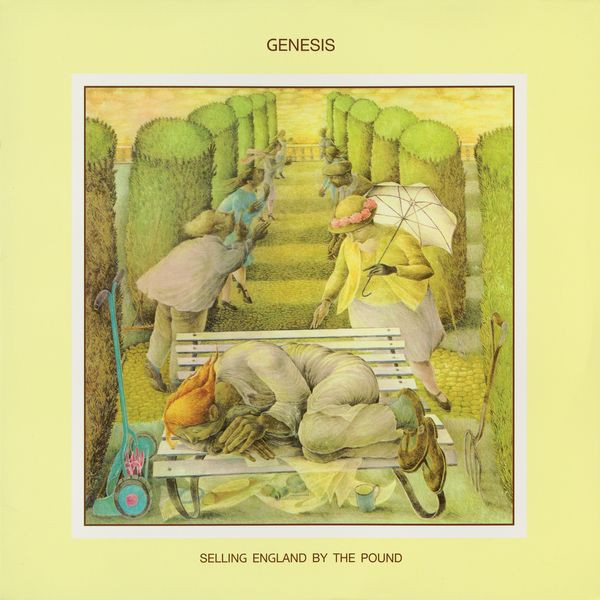

Selling England by the Pound

Release date: October 13, 1973
Cast of Characters:
Peter Gabriel
- vocals, flute, oboe, percussion
Tony Banks
- keyboards, Hammond organ, piano, ARP Pro Soloist synthesizer, Mellotron, 12-string guitar
Steve Hackett
- electric guitar, nylon guitar
Mike Rutherford
- 12-string guitar, bass, electric sitar
Phil Collins
- drums, assorted percussion, lead vocals on
“More Fool Me”
, backing vocals